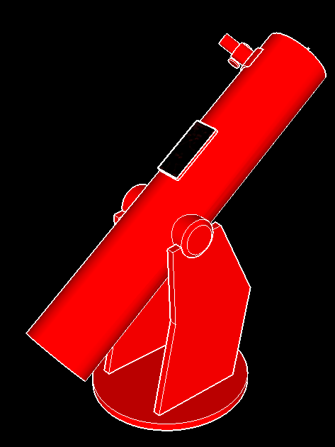
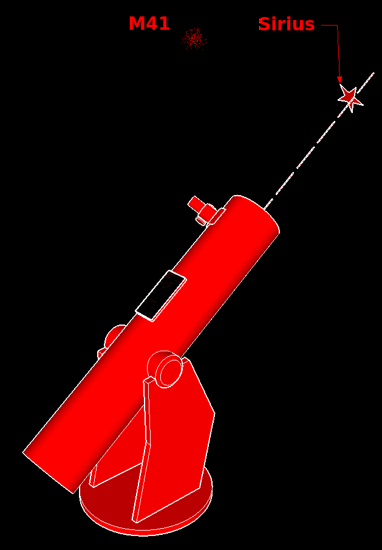
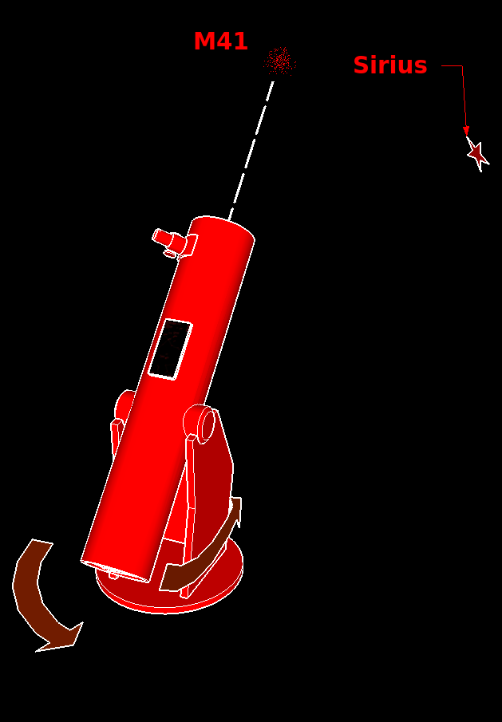

∠60°
No Geolocation
Sirius:,
Mars:,
Rigel:,
Jupiter:,

Connect the smartphone to the optical tube such that its top points to the viewing direction and it lies flat on the tube.
Stand with Israel against terror!

Point the telescope to an easily identifiable star or planet nearby an object you want to find. For example in order to find M41 or M47, point the telescope to Sirius — this is going to be the alignment star.
When the telescope is pointing to the alignment star tap button and tap on the alignment star on the map. Once the application is aligned, it tracks the telescope movement using smartphone's sensors.
If you can't see the alignment star on the map, there may be a common compass accuracy problem.
In such a case tap on to switch to manual mode and scroll the map left or right till you see the alignment star.
Then tap and tap on the alignment star on the map as usual.

Once aligned, tap on the object you want to find (for example M41, M47) and follow the direction line on the map till you reach the target. Now you can observe the object you selected.
It is recommended to repeat alignment for each new target you want to find
For detailed instruction and troubleshooting please refer to the [Video Tutorial] and to the integrated manual via: →
Settings (version)
| FOV | ∠60° | ||
| Stars | m≤4 | ||
| DSO | m≤5 | ||
| List | None | [edit] | |
| Font | +0mm |
name: dso1, dso2, dso3, …
| Wiki: |
Name,RA(hh:mm:ss),DE(±dd:mm:ss)
GPS: Unknown, Unknown
α= β= γ= C= UTC=